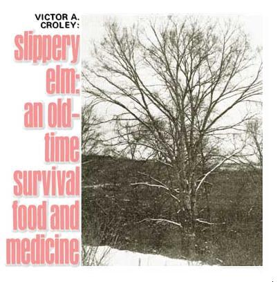

We seldom think of it now as food. But foremost among the survival rations recommended to early white settlers by the native North Americans those pioneers found here . . . was the inner bark of the slippery elm tree (Ulmus fulva or rubra).
When dried and ground into a coarse meal, the sweetly fragrant and creamy white or pinkish inner bark of the slippery elm can be boiled into a porridge that looks and tastes very much like oatmeal. And, surprisingly enough, modern nutritionists have discovered that, when so prepared, the bark does indeed possess a food value about equal to that of oatmeal.
This almost forgotten fact actually helped to change the course of our nation's history on at least one occasion. It is recorded that, during their bitter winter at Valley Forge, George Washington's ragtag Revolutionary War soldiers lived through one 12-day period on little more than slippery elm porridge. And no one, of course, knows how many starving pioneer families scraped through their first winters on this continent thanks to the same survival rations.
Slippery elm's inner bark, on the other hand, does have its other uses too. When ground to a fine powder, it makes a good extender for ordinary flour and can be included that way in a wide variety of recipes. And back before today's sugar-laden treats were so widely available, small boys were fond of stripping off pieces of this cambium bark and chewing it. Such a "chaw" makes a sweet-flavored, long-lasting chewing gum that both satisfies thirst and supplies a certain amount of nourishment.
Almost every back-country homestead up until a generation or two ago knew that slippery elm had yet other values . . . medicinal values. The late Euell Gibbons recommended pouring a pint of boiling water over an ounce of the coarsely ground inner bark, allowing the mixture to cool, and then adding the juice of one-half lemon and enough honey to sweeten the brew to taste. Our pioneer forebears treated colds with such a "lemonade" and it was especially recommended for feverish patients. "Allow them to drink all they will take," said Gibbons in his book, Stalking the Healthful Herbs, "for this drink will quench their thirst and help relieve their illness by giving them strengthening, easily digested food at the same time."
A somewhat similar formulation (one heaping teaspoon of finely powdered bark mixed into enough cold water to make a paste and then quickly stirred into a pint of boiling water and flavored with cinnamon) popped up again and again in early American almanacs, herbals, and medical guides. According to such old manuals, it's good for almost anything that ails you: catarrh, colitis, coughs, colds, dysentery, painful urination, pleurisy, quinsy, influenza, bleeding from the lungs, and consumption . . . to name just a few of the illnesses that were treated by this beverage. And, for folks who weren't suffering any of these ailments, the same drink-taken lukewarm just before bedtime-was prescribed as a sleep inducement.
And if that doesn't sell you on the virtues of slippery elm, bear in mind that seasoned wood from the tree is especially hard and tough and wears well. For this reason, back when our nation lived much closer to the land, it was widely sought out for the construction of door sills, wagon wheel hubs, and other such "high stress" items.
Botanists sometimes make quite a distinction between Ulmus fulva and Ulmus rubra. . . but most farmers and outdoorsmen treat the two as variants of the same tree. (All slippery elms-both the lighter brown and the red varieties-are very similar and are frequently called "red elm" by native woodsmen. It takes a good eye to note the differences between cross sections of fulva and rubra bark and hard support wood.)
Individual specimens of slippery elm may grow to a height of seventy or eighty feet on moist, deep, alluvial soil . . . but they never have the noble, vaulting vase shape of the taller American elm. And when standing out in the open by themselves, Ulmus fulva and Ulmus rubra generally take an even lower and many-branched form.
Slippery elm grows in lowlands and along water from Quebec west to North Dakota and south to Florida and Texas. Its leaves are larger than the leaves of the American elm, sometimes reach a length of six inches, are a dull and dark green in color, and are rather coarse and rough on both sides. The buds of the leaves are covered with a yellow-tinted wool in the spring, and the winter buds are brown, dark, and hairy. The tree's seeds are round, flattened, and surrounded by a thin wing about half an inch in diameter. The seeds ripen and fall when the slippery elm's leaves are about half grown.
The outer bark of the slippery elm is reddish brown, deeply furrowed, and quite rough. It can be harvested any time of the year but peels from the tree most easily in the spring (when the sap is running). The juicy inner bark may then be pulled from the outer with little difficulty. Spread the cambium bark out on newspapers in a warm, dry room. Once it has dried, it may be stored (I like to keep mine in sealed glass jars) and ground for use as desired.
|
 |
|
|